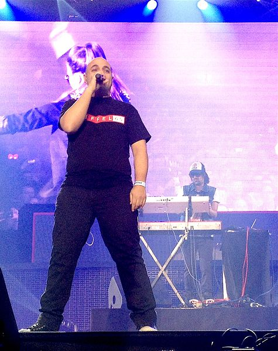

logo della bandss
Gli Eiffel 65 (pronunciati Eiffel sixty-five) sono un gruppo musicale eurodance italiano nato nel 1998 negli studi della casa discografica torinese Bliss Corporation.
La formazione originale della band comprendeva il musicista Maury (all'anagrafe Maurizio Lobina), il front-man e cantante Jeffrey Jey (all'anagrafe Gianfranco Randone) e il disc jockey Gabry Ponte (all'anagrafe Gabriele Ponte).
Per l'enorme successo delle loro hit, prima fra tutte Blue (Da Ba Dee), gli Eiffel 65 sono il gruppo icona nella storia della musica dance italiana e internazionale con più di 15 milioni di copie vendute in tutto il mondo nei primi cinque anni.
Nella loro carriera vantano importanti riconoscimenti internazionali tra cui il World Music Award ricevuto a Montecarlo nel 2000 come artisti italiani che più hanno venduto nel mondo e la nomination ai Grammy Awards americani nella categoria “Miglior artista dance”. Sono l'unica band italiana ad essere riuscita a vendere più copie negli Stati Uniti ottenendo il triplo disco di platino e numerose altre certificazioni in tutta Europa.
Il nome del gruppo è frutto della scelta casuale di un computer che individuò in un elenco di possibili nomi la parola "Eiffel", alla quale fu aggiunto per errore il numero 65 le cui cifre appartenevano a un numero telefonico scritto su una demotape. Dopo il distacco di Gabry Ponte e la parentesi con i Bloom 06 che causarono lo scioglimento del gruppo nel 2006, nell'agosto del 2010 Maury e Jeffrey sono tornati a ricostituire il gruppo, inizialmente anche con Gabry Ponte e dal 2014 da soli.

logo della bandss
